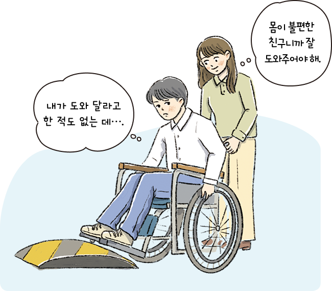

자료 읽기진정한 배려의 모습이란

일방적인 배려는 진정한 배려가 아니다. 예를 들어 우리는 아이가 서투른 손놀림으로 신발 끈을 매거나 단추를 잠그는 모 습을 보더라도 곧바로 도와주지 않는다. 이는 아이를 도와주지 않으려는 것이 아니라 아이가 도움을 요청할 때까지 기다려 주 기로 한 것이다. 만약 아이가 도움을 요청하기도 전에 신발 끈 을 대신 매주거나 단추를 잠가 주었다면 아이는 신발 끈을 매고 단추를 잠그는 방법을 배우지 못할 것이다.
이처럼 자신의 관점에서 상대방에게 필요한 도움을 짐작하여 도와주는 것은 진정한 배려가 아니다. 상대방의 자율성을 존중 하면서 동시에 상대방의 입장을 깊이 헤아려야만 진정한 배려 를 실천할 수 있다.
● 진정한 배려를 실천하는 방법에는 무엇이 있을까?
상대방에게 도움이 필요한지 먼저 물어본 후에 도와주는 것에 동의하면 도와준다.